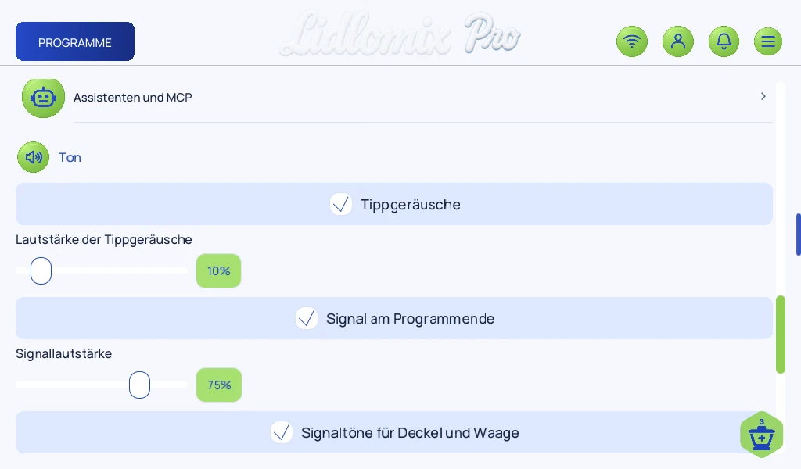

Am Anfang stand ein fleckiges Heft mit handgeschriebenen Familienrezepten. Der Assistent las ein Foto der Seite und zeigte unklare Stellen zur Korrektur an. Danach wandelte er Angaben wie eine Handvoll Nüsse in abwiegbare Mengen um und bereitete die Schritte und Programme für den Monsieur Cuisine vor.

Als Nächstes sollte das angepasste Rezept direkt aufs Gerät. Nach ersten Versuchen und unterbrochenen Verbindungen konnte man beim Einschalten zwischen der Werks-App und Lidlomix Pro wählen.

Das in ChatGPT vorbereitete Rezept ließ sich als JSON speichern, per WLAN vom Smartphone senden und auf dem Connect prüfen. Das Gerät zeigte dann die Zutaten, die Wiegeschritte und die Einstellungen der unterstützten Kochschritte an.

Temperatur und Drehzahl bekamen horizontale Regler. Minuten und Sekunden erhielten separate Spalten. Schnellwerkzeuge ließen sich während des Kochens öffnen, mit Rückkehr zum aktuellen Schritt.

Die Starttaste blieb beim Ändern von Einstellungen sichtbar. Pause und Fortsetzen wurden verbessert, Turbo und gründliche Reinigung überarbeitet und die Toneinstellungen bekamen eine Hörprobe.

Für den WunderPeeler kam ein eigenes Programm mit Waage und bebilderter Montageanleitung. Die Rezeptkataloge wurden getrennt und der Connect erhielt Online-Updates mit Fortschrittsanzeige.